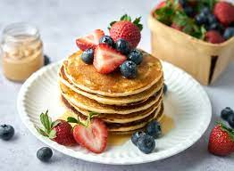

Pancakes

Description
These pancakes are a family favorite and they will definitely have everyone coming back for seconds (or thirds in our family). Serve with some fresh fruit on top and enjoy! From my family to yours.
Ingredients
- 1 1/2 cups all-purpose flour
- 3 1/2 tsp baking powder
- 1/4 tsp salt to taste
- 1 tbsp white sugar
- 1 1/4 cup milk
- 1 egg
- 3 tbsp butter, melted
- Optional: fruit to top
Steps
- In a large bowl, sift the flour, baking powder, salt, and sugar. Make a well in the center and pour in the milk, egg, and melted butter. Mix until smooth.
- Heat a lightly oiled griddle or frying pan over medium heat. Pour or scoop the batter onto the griddle, using about 1/4 cup for each pancake.
- Cook until golden brown. Serve warm with fresh fruit and syrup.